01 Full Workflow Example
Source:vignettes/articles/01_Full_AutoSpectral_Workflow.Rmd
01_Full_AutoSpectral_Workflow.RmdInstallation
If you need to install AutoSpectral, run this bit first:
# Install Bioconductor packages
if (!requireNamespace("BiocManager", quietly = TRUE))
install.packages("BiocManager")
BiocManager::install(c("flowWorkspace", "flowCore", "PeacoQC", "FlowSOM"))
# You'll need devtools or remotes to install from GitHub.
install.packages("remotes")
remotes::install_github("DrCytometer/AutoSpectral")Get the data
Download the data for today’s example from Mendeley Data.
These data are a 9-colour panel run on a 5-laser Cytek Aurora. The samples are from spleen, lung and liver. This is a pretty simple experiment, which is nice since it will run quickly. The different tissues allow us to look at how to handle diverse autofluorescence profiles. I’ll point out that this panel has been deliberately designed to accommodate autofluorescence peaks, so we can expect autofluorescence removal to work pretty well with any method. In my testing, you can use multiple autofluorescences and get good results; you can also use deconvolution of the autofluorescence using principal components. Both produce good results with a highly over-determined data set like this. We’ll look at the per-cell autofluorescence extraction with these data, which has the advantage of also working on large panels.
Getting your fluorophore spectra from the controls
Creating the Control File
Since the default cytometer is the Aurora, we can actually just call this without any arguments. Otherwise you need to specify the cytometer you’re using.
asp <- get.autospectral.param(
cytometer = "aurora",
figures = TRUE # plot figures throughout to show what's going on
)Where are the controls? This must be typed correctly.
control.dir <- "./Raw/Set1/Reference Group"Create the control file. You will need to manually edit your control file, telling AutoSpectral what’s going on. It will try to fill in some stuff for you, but you should check this. See the article on this on GitHub or Colibri Cytometry.
create.control.file(control.dir, asp)We get warnings because I’ve got both bead and cell controls, and
AutoSpectral would like me to pick one per fluorophore. This isn’t
strictly necessary, so if you want to bypass this, just change the names
in the “fluorophore” column of the control file to be unique names. For
instance, you could have “PE cells” and “PE beads”. Note, however, that
whatever you put as the “fluorophore” is what gets written to the
description of the channel in the FCS file later on. So, you’ll be
better off picking one control per fluorophore. If you have a situation
like this, you can run the controls in different
flow.control sets, figure out which you like best, and then
do a final version with the best choices.
Here’s what the control file looks like as first generated:
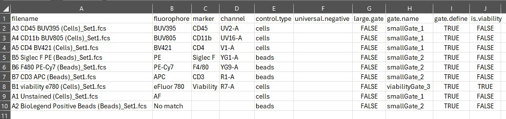
If AutoSpectral does not fill in the marker column, add your marker labels. To avail yourself of AutoSpectral’s automation and get it to fill in the names of your markers automatically, include the marker name in the name of your single-stained FCS files. This should be separated from other elements of the filename by a space or an underscore. The marker also must be represented in the marker database, and the way you’ve written the marker must match one of the synonyms in the database. If your marker or the way you write it isn’t in the marker database, please add it! Changes will be incorporated with the next update.
You do not have to use the marker names AutoSpectral provides. Write these however you want.
If AutoSpectral does not fill in the fluorophore column, add your fluorophore names. Also check to be sure that the names AutoSpectral has given you are correct–getting accurate matching of complex fluorophore names when people may write them very differently is difficult. It’s especially difficult when the fluorophores may contain the same elements repeatedly, so we have to try to distinguish “PE”, “PERCP”, “PERCP-C5.5”, “PERCP Cy5.5”, etc.
You do not have to use the fluorophore names AutoSpectral provides, but you will lose out on the spectral QC if the names do not match the name in the database. This is not essential to achieve good unmixing.
If AutoSpectral does not fill in the control.type column, fill this in with either “beads” or “cells”, as is appropriate for the sample on that line.
If AutoSpectral does not fill in the channel column, you will need to add this yourself. This is a bit harder. If you know this already, great. I suggest checking against the cytometer database. to be sure you write the channel name correctly. If you do not know it, the best way to find out is usually to look at one of the cloud spectral viewer tools for this, such as Cytek Cloud, BD Spectrum Viewer, BioLegend Spectra Analyzer or FluoroFinder. Please note that the channel names in FluoroFinder do not always match what the names actually are in the instrument, so while you can use that figure out more or less where the fluorophore has its peak emission, be sure to use the names from the cytometer database for AutoSpectral.
To avail yourself of AutoSpectral’s automation and get it to fill in
the names of your fluorophores automatically, include the fluorophore
name in the name of your single-stained FCS files. You may alter the
names of the single-stained FCS files manually prior to running
create.control.file() to do this (I would always advise
creating a back-up copy before altering data or metadata). For the
fluorophore names to be recognized by AutoSpectral, they need to be
separate from other elements in the file name by a space or an
underscore “_“. They also need to be in the fluorophore
database, and have a synonym in one of the columns that matches the
way you have written the fluorophore in your FCS filename. If your
fluorophore or the way you write it isn’t in the marker database, please
add it! Changes will be incorporated with the next update.
It is always recommended to use a universal negative (a separate unstained sample), whether you are using AutoSpectral or any other unmixing platform. To specify which sample is the universal.negative for each single-stained control, copy and paste the relevant filename into the universal.negative column. The negative sample for a given stained sample should be the same type of particles (cells or beads), and should really be the same thing, just unstained. A universal.negative (unstained) sample is its own universal negative.
Here’s what we want it to look like, in terms of assigning universal negatives and setting fluorophore names. We’ll get to the gating in a moment.
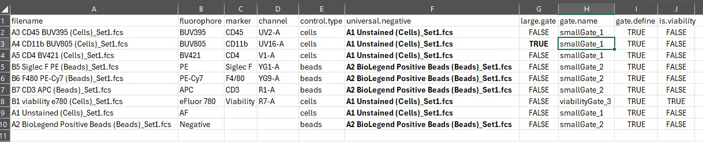
For more on this, see the Control File article.
Once you’ve got it the way you want, write in the name of the control file and run the error checking function.
control.file <- "fcs_control_file.csv"
check.control.file(control.dir, control.file, asp)This will either tell you it didn’t find any issues, or, more likely,
provide you with a table of potential issues to consider fixing. Items
listed as warnings will not prevent the pipeline from running, but may
reduce the accuracy of the spectra generated and are things for you to
check. For instance, AutoSpectral will check how many events you have in
each of your control files and will raise a flag if you don’t have at
least 5000 events. The threshold to trigger this particular warning can
be adjusted using the min.event.warning argument. See the
help using ?check.control.file.
Gating
Once, the control file passes the error checks, we can create some gates. This can be done in full automatic mode, and if you wish to try that, jump to the next section: “Loading the Data”. As of version 1.5.0, however, there is more control over the gating process, which is covered in this section.
Gating allows us to identify which events in the file are actually
our cells, as opposed to debris, doublets or other stuff. While you can
directly proceed to loading in all of the data by calling
define.flow.control(), which automatically defines gates as
best it can, taking a moment to check that the gates are correct prior
to doing this will work more consistently.
The first step here is to consider which samples should share the same gates. AutoSpectral will try to help you with this when creating the control file, at least if you have version 1.5.0 or higher installed. It will create simple groupings of your samples based on the type of sample (beads vs cells) and whether the marker identifies dead cells. If AutoSpectral cannot identify the type of sample or any information about the markers from the file names, it will be unable to help here, and you must do this manually.
For this, we are going to be working with the control file. Let’s
take our example as it is currently. We have some controls that are
beads, some that are cells, one that is a viability marker, and one cell
control that we have marked as needing a larger gate because it is a
myeloid population with higher expected side scatter values. We need at
least four gates. We can call these whatever we want, but I’m going to
pick somewhat informative names: “beads”, “lymphocytes”, “myeloid” and
“dead”. We add these names to the appropriate rows of our table in the
gate.name column:
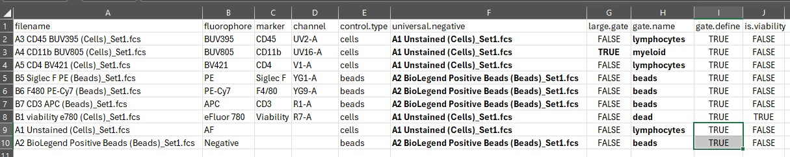
Now we can choose which samples we want to use to define the gate
boundaries. The simplest option is to just use everything. To do this,
put “TRUE” in every row of the gate.define column. This
should be done by default in version 1.5.0 and higher (as shown
here).
If you want to get fancier about it, you can choose which samples you use to define the gates. This can be helpful if some samples are “better” than others. It is particularly useful when using the “landmarks” gating system. This system finds the brightest positive events in the expected peak channel for the sample(s) and uses those to define the boundary. This means that you can use your anti-CD3 or anti-CD4-stained sample to define the boundary of the lymphocyte region based on where the CD3+ or CD4+ cells are. For today’s example, we will use the landmark gating system. We can define one gate using our CD4-BV421 (cells) and apply it to the CD45 BUV395 (cells) as well for lymphocytes. We can define a second gate using our CD11b-BUV805 (cells) for the myeloid cells. We can define a third gate using our viability-e780 (cells) for dead cells, and we can define a fourth gate on all of the stained bead samples, which will all be in the same position since they are beads.
Note: I expect to provide a little more automated assistance in future version for filling in this part of the control file.
Now our control file looks like this:
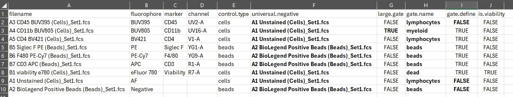
You can create any number of gates and pass them in the next step.
Gates are saved and can be reused. See the dedicated articles on this
for more information, including on how to use the
tune.gate() function. Gating
Density
gating parameters Gate
tuning
Before proceeding, run the control file check to be sure that what you’re doing with the gates is consistent with what AutoSpectral expects.
check.control.file(control.dir, control.file, asp)Assuming that passes with no errors, define the gates:
gate.lymphocyte <- define.gate.landmarks(
control.file = control.file,
control.dir = control.dir,
asp = asp,
n.cells = 2000,
percentile = 70,
gate.name = "lymphocytes"
)
gate.meloid <- define.gate.landmarks(
control.file = control.file,
control.dir = control.dir,
asp = asp,
n.cells = 2000,
percentile = 70,
gate.name = "myeloid"
)
gate.dead <- define.gate.landmarks(
control.file = control.file,
control.dir = control.dir,
asp = asp,
n.cells = 2000,
percentile = 70,
gate.name = "dead"
)
# for beads, we'll use the density-based gating instead
gate.beads <- define.gate.density(
control.file = control.file,
control.dir = control.dir,
asp = asp,
gate.name = "beads",
color.palette = "turbo", # pseudocolor heatmapping palette
boundary.color = "darkgoldenrod" # what color is the gate edge?
)Note that this can be simplified to an lapply loop, if desired. Also, defining the gates will proceed more quickly if you have AutoSpectralRcpp installed, as it will take over internally for the density calculations.
Be sure to check the gates that are generated in the
figure_gate folder–do they look right? If not, go to the
Gating articles on GitHub
Colibri
for tips on how fix it. Gating
Parameters Gate
Tuning
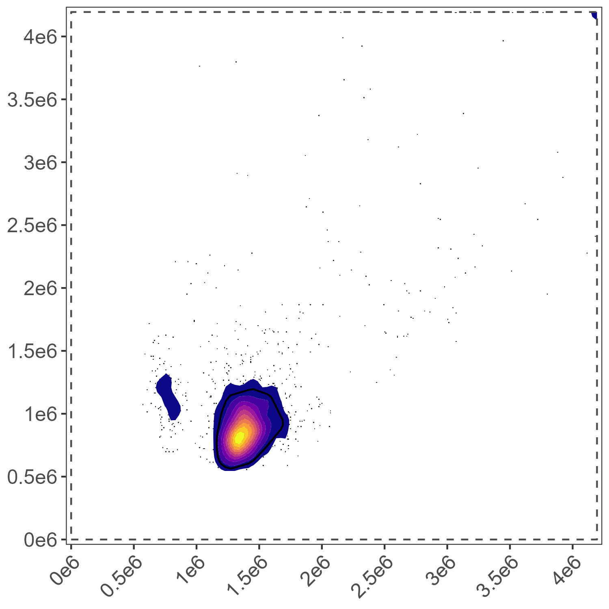
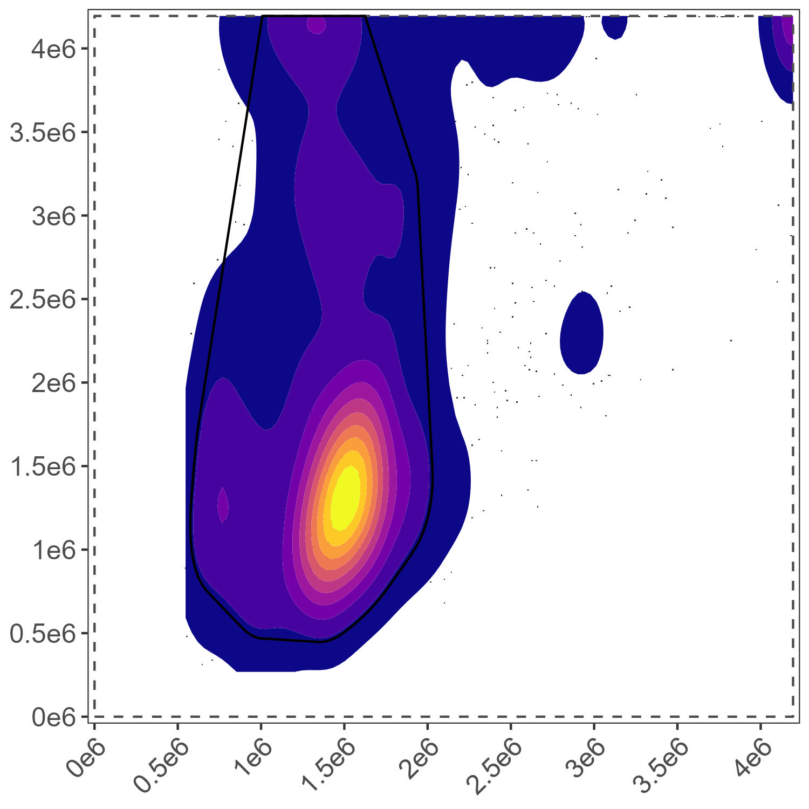
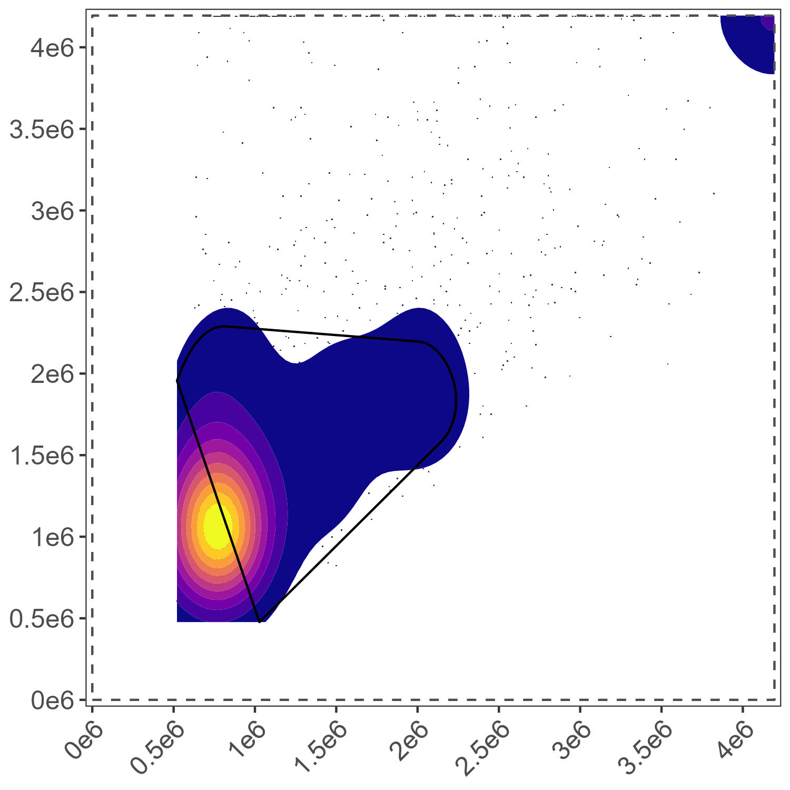
This one could probably do with some tuning.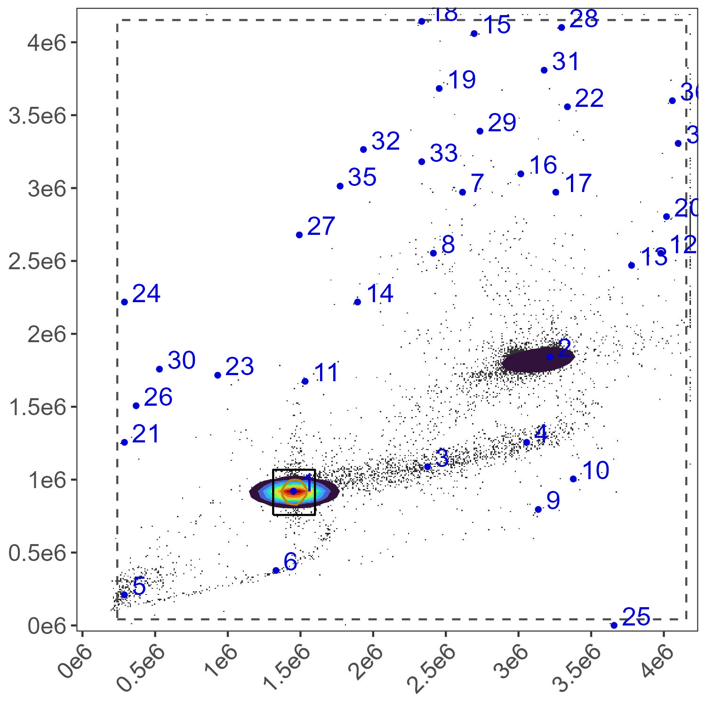
Let’s adjust the dead cell gate quickly.
tune.gate(
control.file = control.file,
control.dir = control.dir,
asp = asp,
n.cells = c(500, 2000, 5000),
percentile = c(10, 50, 80),
gate.name = "dead",
color.palette = "mako",
boundary.color = "red"
)There results appear in folder figure_gate_tuning:
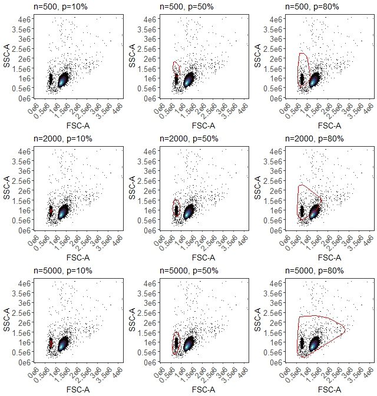
Now we have some options. We want a gate that includes the dead cells, which are the population on the lower left. We can pick the n=500, p=80% one, which pretty much only includes the dead cells, same for n=2000 p = 50%, or something like the n=5000, p=80%, which includes the live cells as well. Any of those will end up in basically the same place in the end, provided we do the control cleaning. Our original gate would also have been fine, to be honest. I’m going to select n=5000, p=50%. To do that, we re-run the gate definition call:
gate.dead <- define.gate.landmarks(
control.file = control.file,
control.dir = control.dir,
asp = asp,
n.cells = 5000,
percentile = 50,
gate.name = "dead",
color.palette = "rainbow" # FlowJo-like colours
)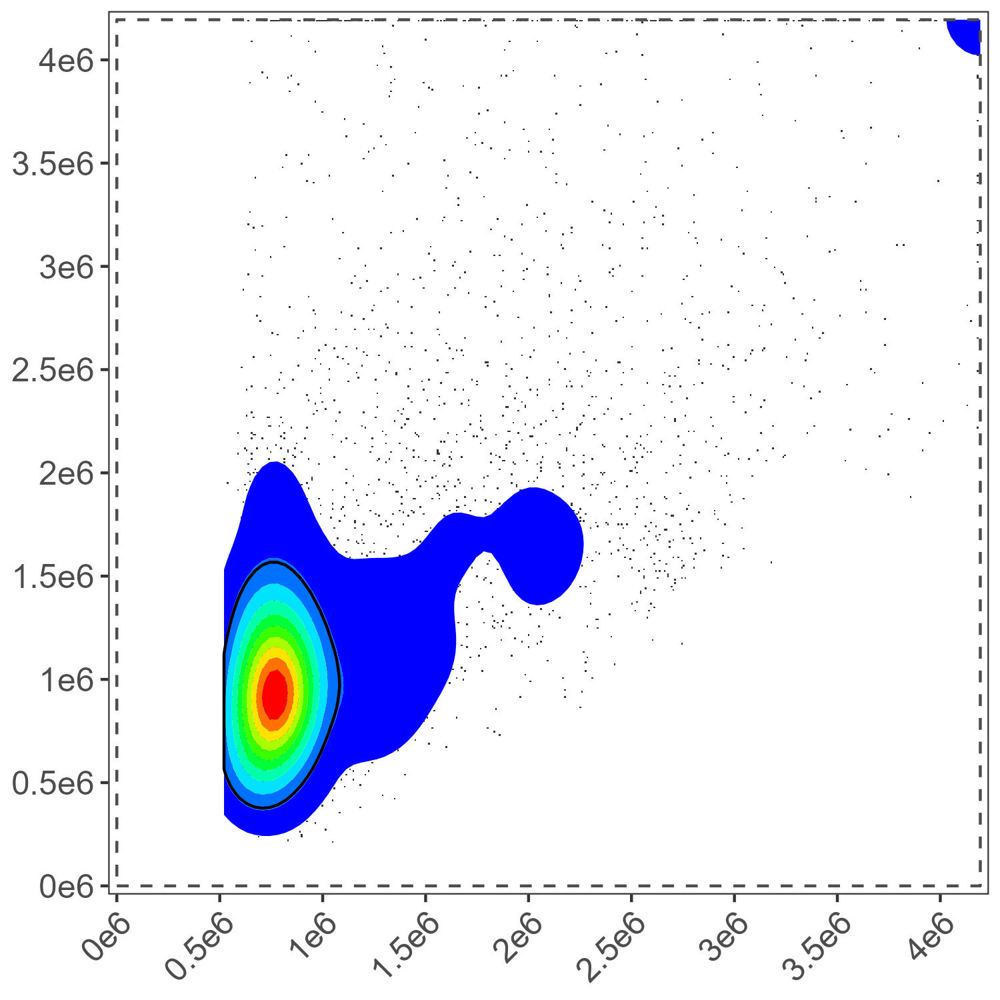
Loading the Data
If everything looks okay with the gating, we proceed to load in all of the data, applying those gates to select the events we want.
# Combine your gates into a list
my.gates <- list(
"lymphocytes" = gate.lymphocyte,
"myeloid" = gate.meloid,
"dead" = gate.dead,
"beads" = gate.beads
)
# Pass them to the function call
flow.control <- define.flow.control(
control.dir = control.dir,
control.def.file = control.file,
asp = asp,
gate.list = my.gates,
color.palette = "rainbow" # optional: changes the plot color scheme
)This will create a plot of each reference control sample with the
intended gate applied to it. To see these, check the
figure_gate folder.
For instance, here is the lymphocyte gate applied to the CD45 BUV395 sample:
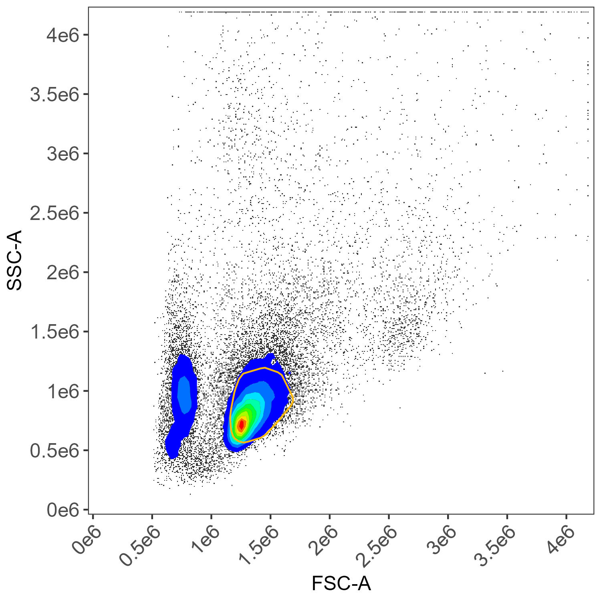
And we can also see that AutoSpectral has re-used the unstained cell sample to create matching negative samples with corresponding gates applied for the myeloid, dead cells and lymphocytes:Control Cleaning
Now we can continue to control clean-up. This helps remove noisy
events, like autofluorescence spikes, and tries to match the positive
events for each control to corresponding cells/beads in the unstained
universal.negative that you defined in the
control.file.
The default settings here are usually best. See more on the cleaning article on GitHub or Colibri. There is a parallelization option, which may be faster.
flow.control <- clean.controls(flow.control, asp)There are lots of plots generated with this, in
figure_clean_controls, figure_scatter and in
figure_spectral_ribbon.
For instance, here is a plot showing the matching that has been applied in terms of selecting cells with similar scatter profiles between the viability (live/dead) marker single-stained control and the unstained sample:
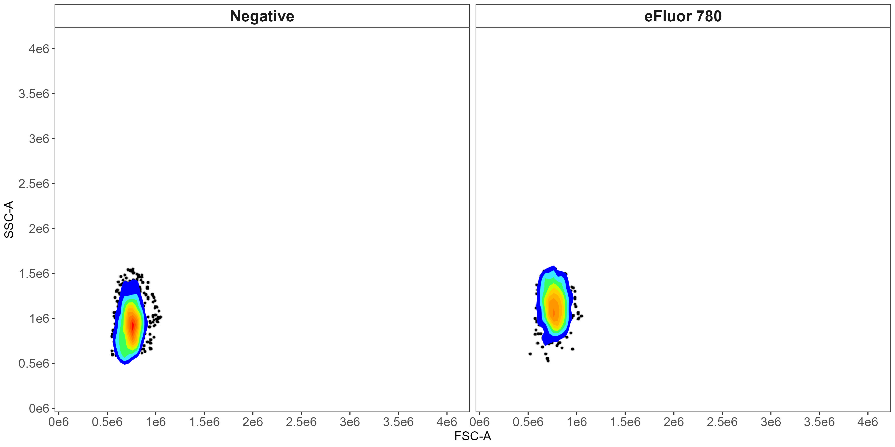
And here we have the attempt to gate out and exclude intrusive autofluorescence in the CD11b BUV805 single-stained control. BUV805 will peak in UV16-A on the Cytek Aurora, while autofluorescence often appear in UV7-A (although this is determined empirically and automatically by AutoSpectral).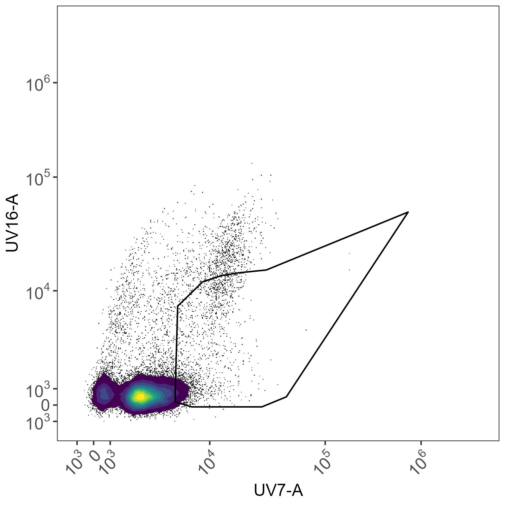
Calculating the Fluorophore Spectra
Now we can isolate the spectra from the controls. By default, this
uses the cleaned data if they are available. If you want to run a
comparison, see the help for this function and set
use.clean.expr=FALSE when running it.
spectra <- get.fluorophore.spectra(flow.control, asp)With this, we get plots of the spectra as traces and a heatmap. We also get a cosine similarity heatmap. You can check these, if you aren’t familiar with what they should look like, against the expected profiles in online webtools. For the Aurora, check on Cytek Cloud. As of version 1.5.0, you should also get a pdf document showing you your fluorophore profiles in overlay compared to a reference standard for that fluorophore on the same instrument. Not all fluorophores will be available, particularly for the instruments I don’t have regular access to, so if you want to contribute, visit the database and add your spectral profiles. See the Discussions page for more details on this.
Databases: Aurora FACSDiscover A8 and S8 ID7000 Opteon Mosaic Xenith Symphony A5SE
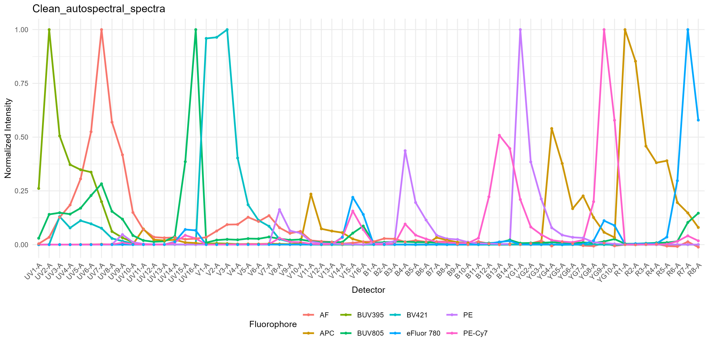
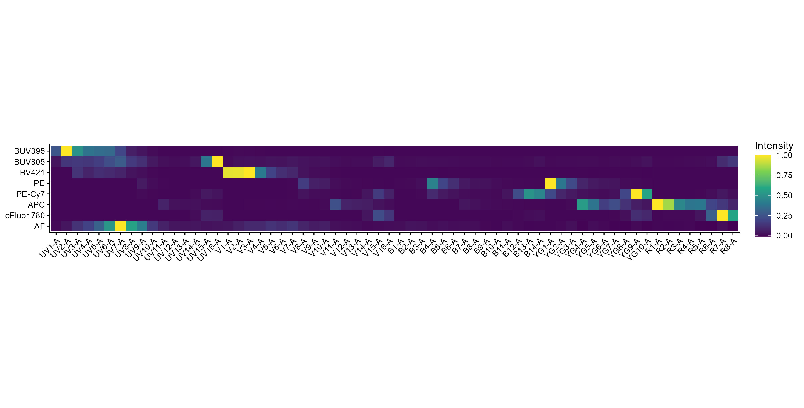
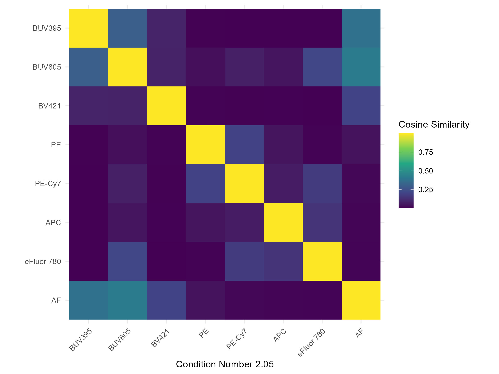
You also get a “Hotspot” matrix, as in the paper my Peter Mage et al.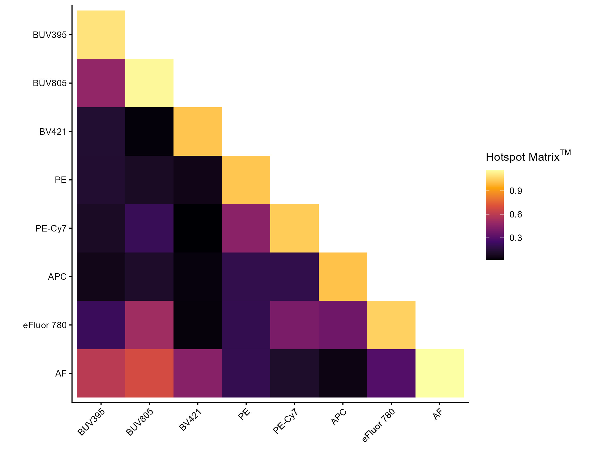
As per their manuscript, we probably don’t need to worry about anything under 4, may want to check stuff between 4-6, and should definitely look into values above 6. That said, this hotspot matrix will include the “AF” as if you were doing OLS unmixing, and that is not really relevant if you proceed with AutoSpectral unmixing of per-cell autofluorescence.As of version 1.5.0, you should also get a pdf quality control report.
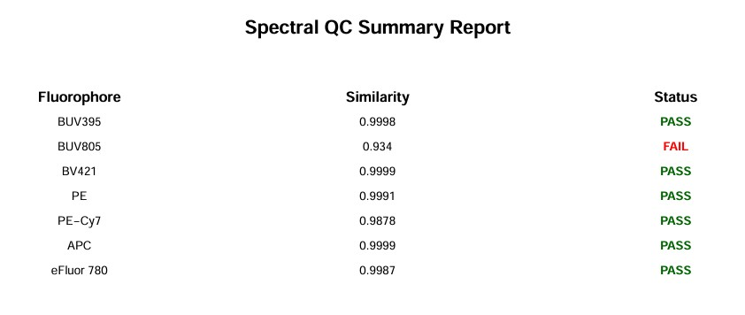
The BUV395 looks quite good: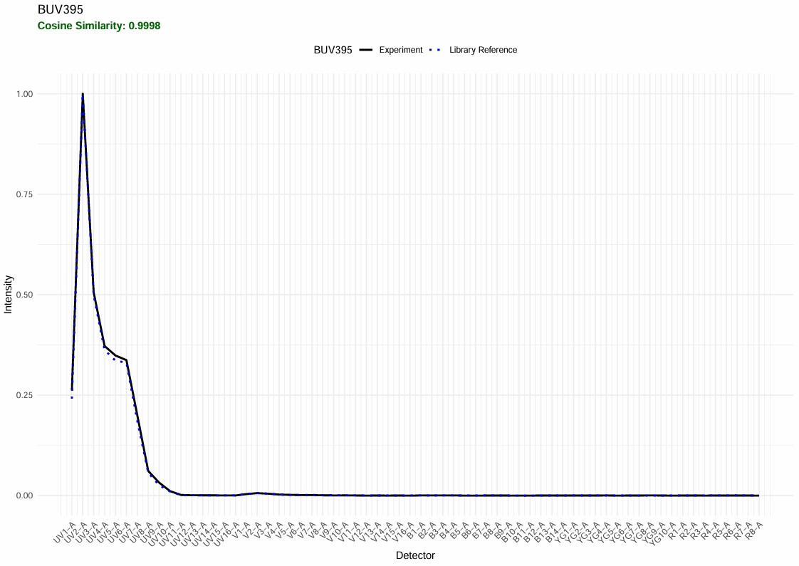
The BUV805 has “failed” QC. Let’s have a look. This QC feature is new, so it will need to be adjusted and improved. In this case, it’s flagging something worth looking at: the BUV805 spectrum in this experiment has an extra minor peak in the UV. That is autofluorescence because the BUV805+ cells are myeloid cells such as neutrophils and macrophages, and the scatter-matching for this population has not worked perfectly. Something for me to work on.This will be fine.
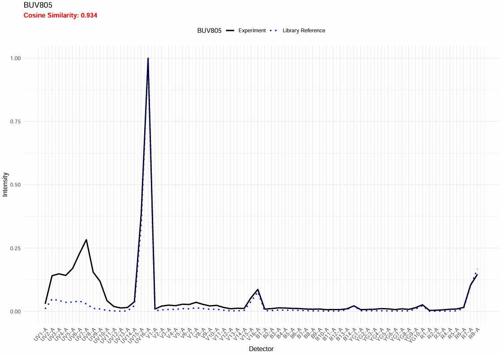
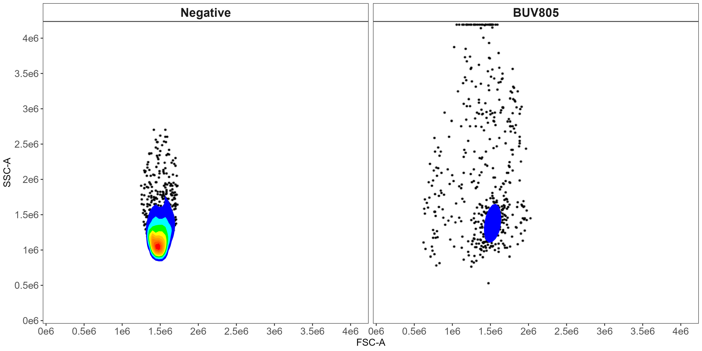
The spectra themselves are saved to a CSV file in the
table_spectra folder. You can open CSV files as a
spreadsheet in Excel and other programs.
Unmixing
AutoSpectral provides options for unmixing. Let’s start with the most
basic, which is replicating the OLS unmixing as in SpectroFlo.
Autofluorescence extraction with OLS and WLS unmixing in AutoSpectral is
handled by including an “AF” signature in spectra. This is
generated automatically from the unstained cell control sample that is
tagged as “AF” in your control.file. We can use OLS or WLS
without autofluorescence extraction by removing this row from the
spectra matrix before we pass it to the unmixing call. Here
are two easy ways to do that: 1) subset spectra 2) read in
the CSV file in table_spectra, removing the AF channel
rownames(spectra)
no.af.spectra <- spectra[ !(rownames(spectra) == "AF"),]
rownames(no.af.spectra)
no.af.spectra.2 <- read.spectra("Clean_autospectral_spectra.csv",
remove.af = TRUE)
rownames(no.af.spectra.2)To unmix, specify the file (and path) of the FCS file you want to unmix:
spleen.fcs.file <- "./Raw/Set1/Stained/D4 Spleen_Set1.fcs"
unmix.fcs(
spleen.fcs.file,
spectra, asp,
flow.control,
method = "OLS",
file.suffix = "with AF extraction"
)
unmix.fcs(
spleen.fcs.file,
no.af.spectra,
asp,
flow.control,
method = "OLS",
file.suffix = "without AF extraction"
)Note that this is just using OLS–this is not the “AutoSpectral” unmixing method, we are just using the AutoSpectral R package to perform bog standard unmixing.
If we have a folder full of FCS files, we can do all the files in the
folder. Note that this is essentially just an lapply loop
over the files. It can, however, be parallelized (set
parallel=TRUE). Memory usage is handled via file chunking,
which you can modify using the chunk.size argument, if
needed.
unmix.folder(
fcs.dir = "./Raw/Set1/Stained/",
spectra = spectra,
asp = asp,
flow.control = flow.control,
method = "OLS", # use OLS unmixing (not AutoSpectral unmixing)
parallel = TRUE,
threads = 3
)By default, the unmixed files are generated in
Autospectral_unmixed, but you can change that by passing a
path to output.dir.
If we want to use weighted least-squares, we call like this:
unmix.fcs(spleen.fcs.file, spectra, asp, flow.control, method = "WLS")The method is automatically appended to the output file
name. If you wish to add something else to the file name, use the
file.suffix argument.
More details on WLS unmmixing, including calculating and re-using weights will be detailed in a separate article later. Reach out if this is important to you now.
Okay, that’s basic unmixing. And, I think you should see a bit of improvement using AutoSpectral even with the same unmixing algorithms due to the improvements in single-colour control handling. We do.
Per-cell unmixing
Per-cell Autofluorescence Extraction
For per-cell autofluorescence extraction and per-cell fluorophore optimization, AutoSpectral needs more information. We will extract autofluorescence signatures from the three tissues involved here, and look at how to use those in the unmixing. We’ll also get information about the fluorophore emission variability and use that to try to improve the unmixing.
When we go to use this information in the unmixing, we select
method = AutoSpectral.
As of version 1.0.0, per-cell autofluorescence extraction will be
faster using AutoSpectralRcpp. On Windows, you will first
need to install Rtools.
devtools::install_github("DrCytometer/AutoSpectralRcpp")Once AutoSpectralRcpp is installed, it takes over when
the unmixing starts. You don’t need to do anything else. It also helps
out in a couple other computationally heavy spots, so you may experience
faster processing elsewhere. There is no need for you to do anything–it
will happen automatically once installed.
To use per-cell autofluorescence extraction only, no fluorophore optimization, do this:
spleen.unstained <- "./Raw/Set1/Unstained/D1 Spleen_Set1.fcs"
spleen.af <- get.af.spectra(
unstained.sample = spleen.unstained,
asp = asp,
spectra = spectra,
refine = TRUE # optional; when TRUE, more AF spectra will be generated, focusing on problem cells. This takes longer, though.
)
unmix.fcs(
fcs.file = spleen.fcs.file,
spectra = spectra,
asp = asp,
flow.control = flow.control,
method = "AutoSpectral", # use AutoSpectral unmixing
af.spectra = spleen.af, # use these AF signatures as the options
file.suffix = "per-cell AF extraction"
)Using refine=TRUE will take longer, both during the
get.af.spectra() call and during subsequent unmixing calls.
The benefit of this is primarily in messier samples, particularly those
from tissues. If you are just using PBMCs or nice lymphoid samples like
spleen, you probably won’t see much benefit from this. This is a
situation where AutoSpectralRcpp helps out in the background, so be sure
to install that for faster processing. This may be sped up further in
the future.
We get the distribution of autofluorescence spectra as a spectral
trace and as a heatmap in figure_autofluorescence. The AF
spectra are saved as a CSV file in table_spectra.
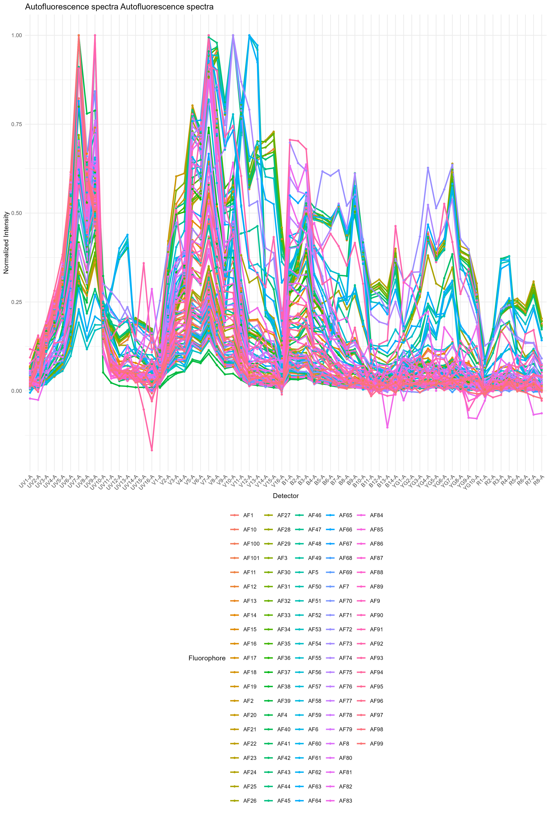
We can also look at the distribution of autofluorescence like this, where the black line represents a median signature (what you might use with an automated single AF parameter), and the red region represents the variation: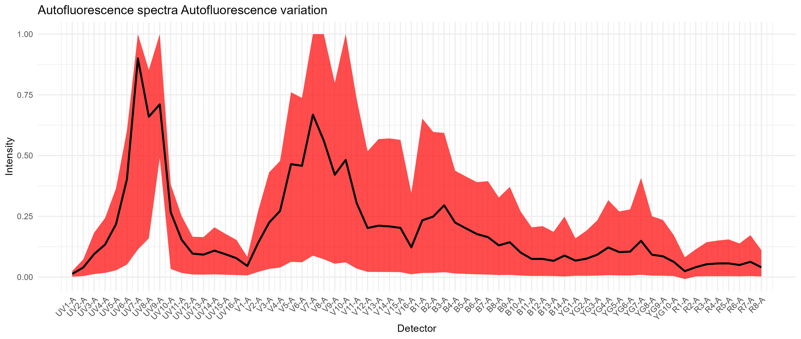
We also get images showing us the impact of the AF extraction on the unstained sample we have supplied.
This is without any AF extraction, looking at what AutoSpectral has determined are the two most-affected fluorophore channels:
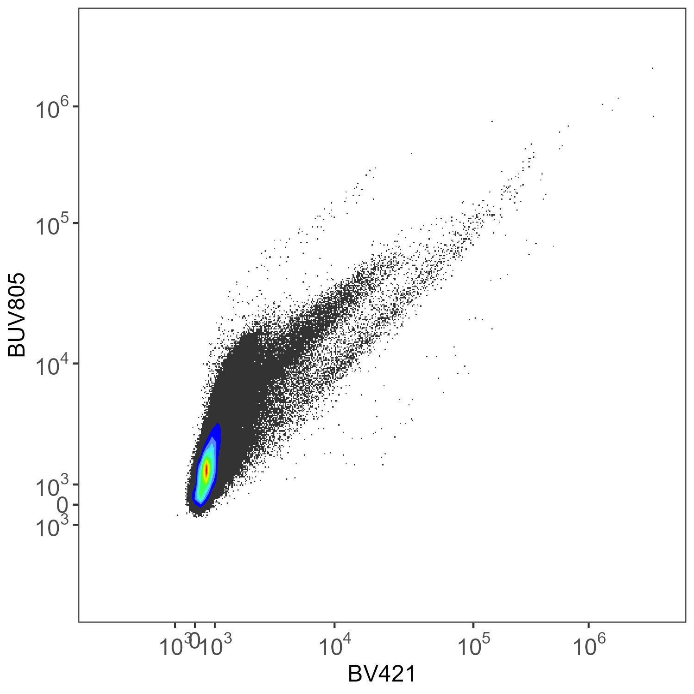
What you get on the same unstained sample with per-cell AF extraction, without refinement (refine=FALSE):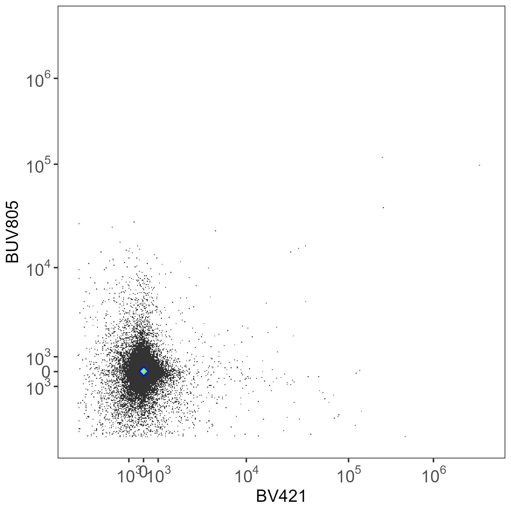
What you get on the same unstained sample with per-cell AF extraction, with refinement (refine=TRUE):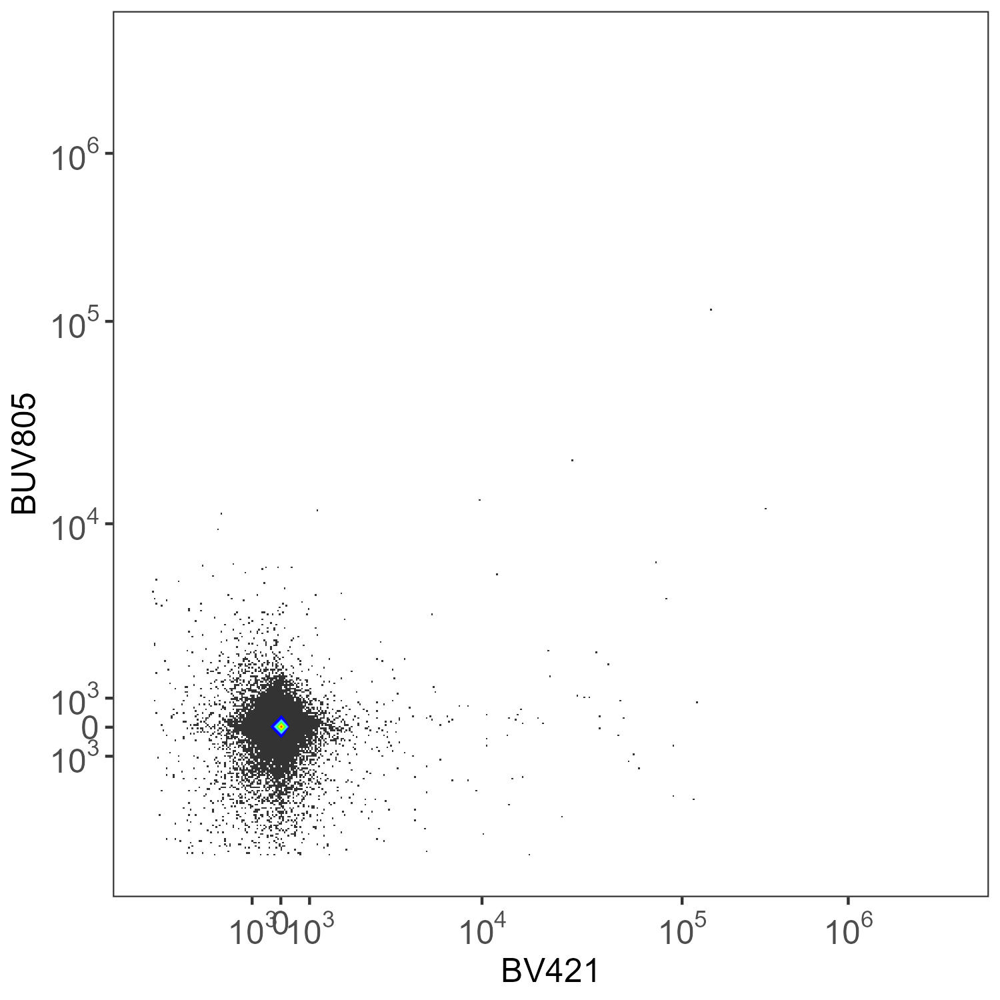
If you want to do this with samples containing different
autofluorescence profiles, such as we have here, we extract the AF
spectral variation from each type of unstained sample. We then provide
the corresponding af.spectra to each unmixing call. The
unmixing call can be to a single FCS file, or it can be, as above, to a
folder. So, if you have a whole set of stained lung samples, you’d pull
your AF spectra from the unstained lung sample, and then call
unmix.folder on the folder containing your lung (and only
lung) samples. Repeat for each type of autofluorescence sample. Read
more about how the per-cell autofluorescence extraction works in the GitHub
or Colibri
article.
In this case, we have three types of samples: spleen, liver and lung tissues. If you are working with human PBMCs, usually a single (optionally pooled) unstained PBMC sample is fine. If, however, you have samples from very sick donors, you might consider collecting unstained sample from each donor and matching the autofluorescence more closely.
lung.unstained <- "./Raw/Set1/Unstained/D2 Lung_Set1.fcs"
lung.af <- get.af.spectra(lung.unstained, asp, spectra) # use refine=TRUE for a modest improvement, default is FALSE
lung.fcs.file <- "./Raw/Set1/Stained/D5 Lung_Set1.fcs"
unmix.fcs(
lung.fcs.file,
spectra,
asp,
flow.control,
method = "AutoSpectral",
af.spectra = lung.af,
file.suffix = "per-cell AF extraction"
)
liver.unstained <- "./Raw/Set1/Unstained/D3 Liver_Set1.fcs"
liver.af <- get.af.spectra(liver.unstained, asp, spectra) # use refine=TRUE for a modest improvement, default is FALSE
liver.fcs.file <- "./Raw/Set1/Stained/D6 Liver_Set1.fcs"
unmix.fcs(
liver.fcs.file,
spectra,
asp,
flow.control,
method = "AutoSpectral",
af.spectra = liver.af,
file.suffix = "per-cell AF extraction"
)You can easily set this up as a for loop or an lapply loop matching elements by names from a list.
For more detail on the per-cell AF extraction, see the dedicated article on this subject.
Per-cell Fluorophore Optimization
To do per-cell fluorophore optimization, we will first measure the
variation in the spectrum for each fluorophore. For the unmixing, we’ll
supply the af.spectra and the
spectra.variants, calling AutoSpectral
unmixing. Read more about how the per-cell fluorophore optimization
works in the GitHub
or Colibri
article.
We provide spleen.af as the af.spectra here
because the control samples are from spleen. Provide whatever is the
best fit for your single-stained controls. The point here is to match
the AF of the controls so that we isolate the variation in the
fluorophore signatures independent of any AF variation.
variants <- get.spectral.variants(
control.dir = control.dir,
control.def.file = control.file,
asp = asp,
spectra = spectra,
af.spectra = spleen.af, # the AF relevant to any cell-based single-stained controls
parallel = FALSE, # use parallel if TRUE
refine = TRUE # optional; when TRUE, the variation will focus on more problematic cells--those that remain far from the ideal location after a first pass
)The output of this is saved as an RDS file in folder
figure_spectral_variants. You can load it back in using the
readRDS() function in base R.
There are plots of the spectral variation for each fluorophore. For something like the CD11b-BUV805 in this data, the variation is largely changes in the autofluorescence because there are multiple cell types expressing CD11b. We also have variation in the long wavelength spillover on the violet and red laser, as should be expected from a tandem dye.
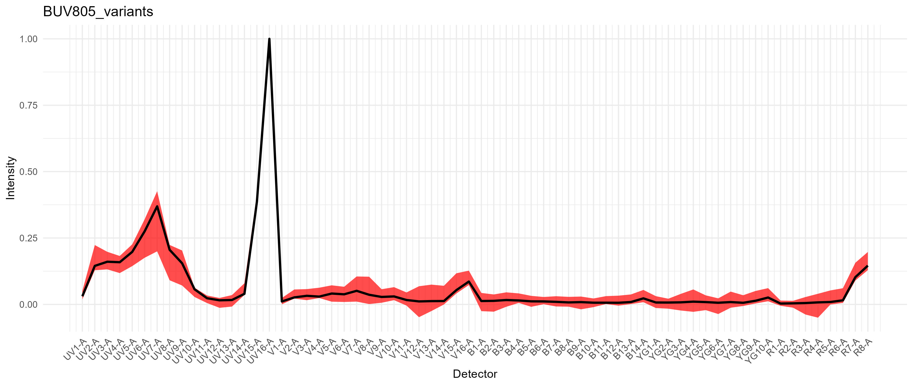
For PE-Cy7, we get a modest difference in the excitation between the blue and yellow-green lasers, which would cause spread if we had a fluorophore in that range on the blue laser, such as RB780. We don’t in this case.
If we had tandem breakdown, we would probably see variability in the YG1-A detector.
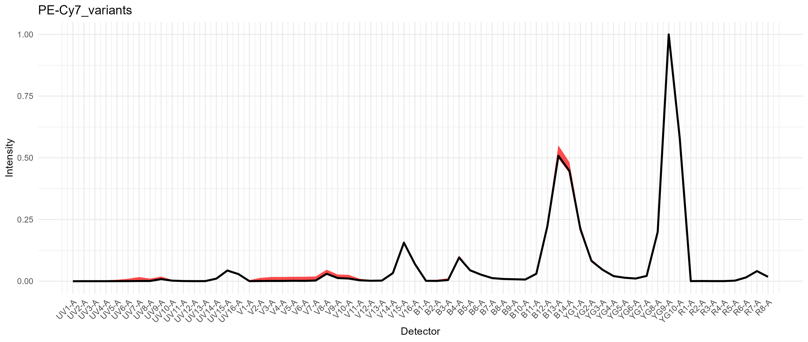
We can now pass this to the unmixing call. For quicker results, you
may set the speed to fast, which checks fewer
pre-screened variants per cell. This can be a bit slow if you have not
installed AutoSpectralRcpp.
unmix.fcs(
lung.fcs.file,
spectra,
asp,
flow.control,
method = "AutoSpectral", # use AutoSpectral unmixing
af.spectra = lung.af, # use this set of AF (matched to sample source)
spectra.variants = variants, # by providing variants, we instruct the unmixing to perform per-cell fluorophore optimization
file.suffix = "per-cell AF and fluorophore optimization",
speed = "slow", # slow will be a bit better
parallel = TRUE
)Please note that if you are comparing the output FCS files from AutoSpectral to others you may have from the cytometer and you are doing this in FlowJo, FlowJo V10 is still terrible at handling scales. You must set the transformations on the axes to be the same for all coefficients in order to do a fair comparison. Otherwise you’ll see whatever you’ve already done to tune your display (e.g., biexponential width basis) for your existing files versus some random default selection by FlowJo for AutoSpectral’s files. Nothing to do with me.
For more detail on the per-cell fluorophore optimization, see the dedicated article on this subject.
Plotting
You can do a comparison using the plotting functions in AutoSpectral, but a dedicated flow cytometry analysis program with a graphical interface will be better. More on plotting on the dedicated article on GitHub or Colibri.
autospectral.unmixed.lung <- "AutoSpectral_unmixed/D5 Lung_Set1 AutoSpectral per-cell AF and fluorophore optimization.fcs"
spectroflo.unmixed.lung <- "./Unmixed/Set1/Stained/D5 Lung_Set1.fcs"
# using native AutoSpectral reader here (see `flowstate`)
asp.lung <- AutoSpectral::readFCS(autospectral.unmixed.lung)
sf.lung <- AutoSpectral::readFCS(spectroflo.unmixed.lung)
create.biplot(sf.lung, "BUV395-A", "BV421-A", asp, title = "SpectroFlo")
create.biplot(asp.lung, "BUV395-A", "BV421-A", asp, title = "AutoSpectral")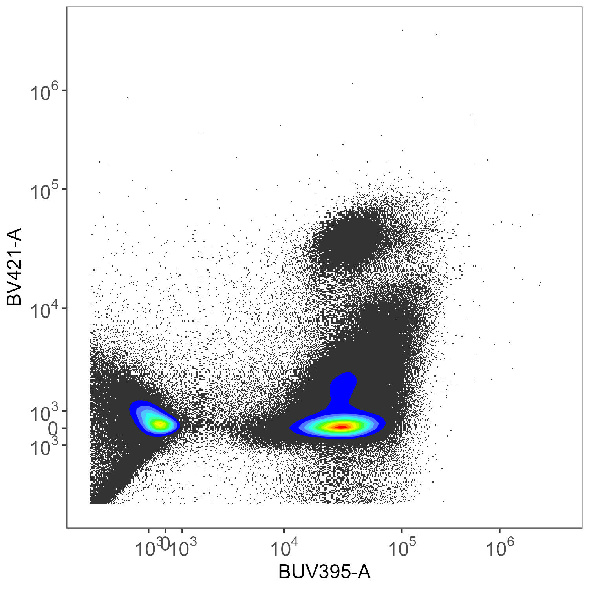
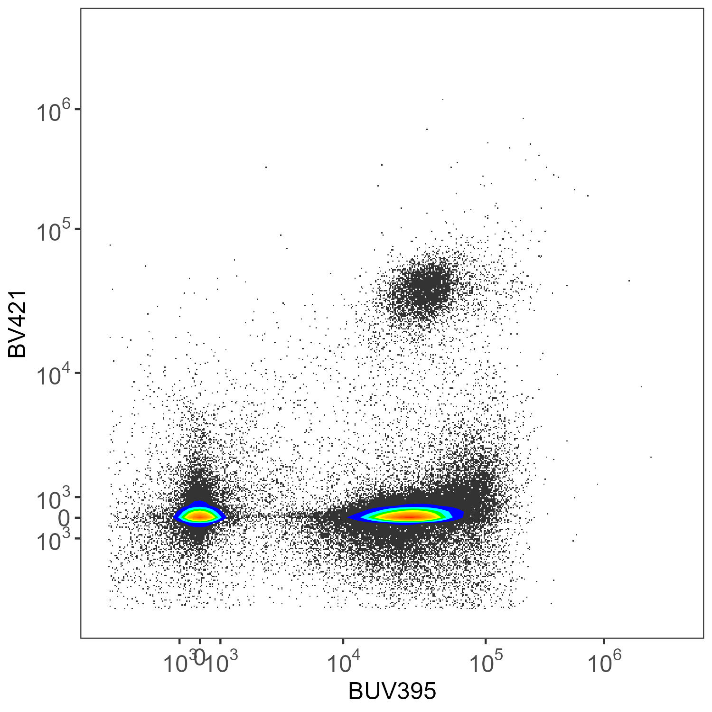
Here we have CD45-BUV395 and CD4-BV421. There really shouldn’t be much of anything low for CD4 in the mouse. This is ungated data, so we’re seeing everythign, without any clean-up.